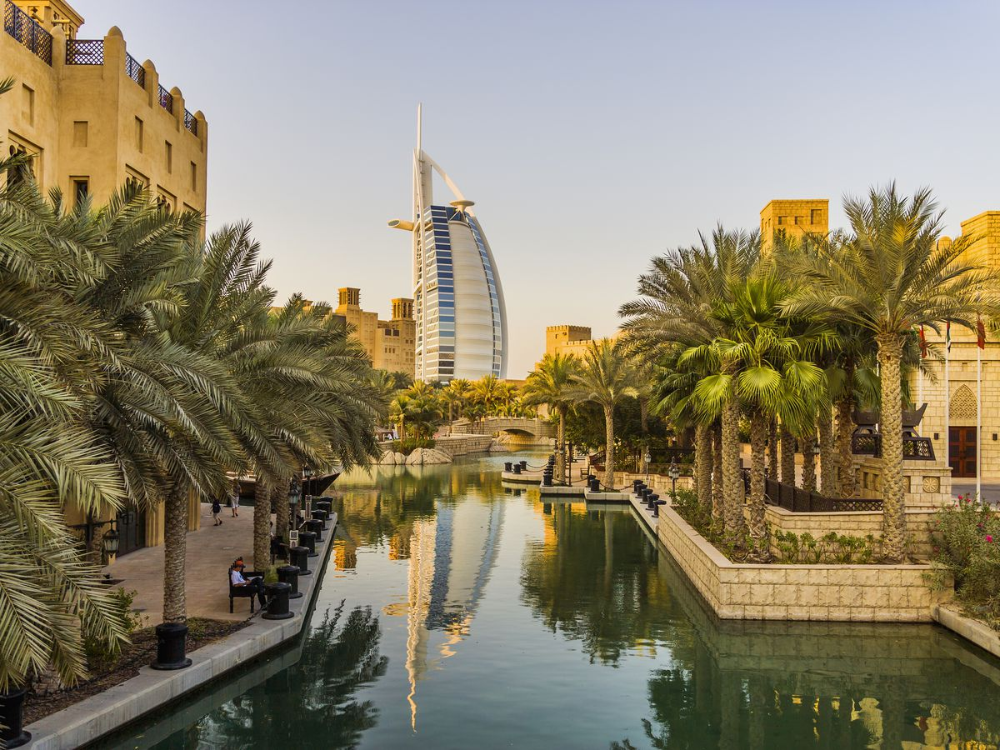
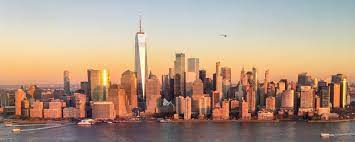
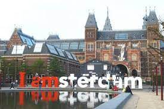

These are my favourite places so far
Dubai is a city and emirate in the United Arab Emirates known for luxury shopping, ultramodern architecture and a lively nightlife scene. Burj Khalifa, an 830m-tall tower, dominates the skyscraper-filled skyline. At its foot lies Dubai Fountain, with jets and lights choreographed to music. On artificial islands just offshore is Atlantis, The Palm, a resort with water and marine-animal parks
New York City comprises 5 boroughs sitting where the Hudson River meets the Atlantic Ocean. At its core is Manhattan, a densely populated borough that’s among the world’s major commercial, financial and cultural centers. Its iconic sites include skyscrapers such as the Empire State Building and sprawling Central Park. Broadway theater is staged in neon-lit Times Square
Amsterdam is the Netherlands’ capital, known for its artistic heritage, elaborate canal system and narrow houses with gabled facades, legacies of the city’s 17th-century Golden Age. Its Museum District houses the Van Gogh Museum, works by Rembrandt and Vermeer at the Rijksmuseum, and modern art at the Stedelijk. Cycling is key to the city’s character, and there are numerous bike paths.
